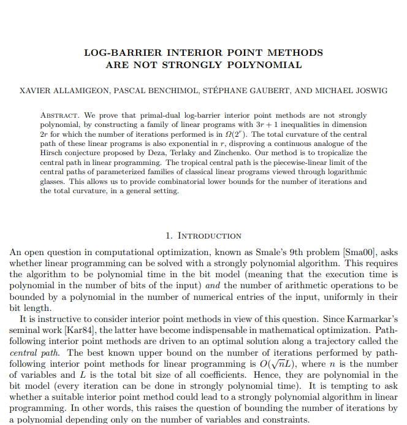
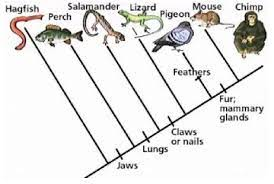

A Tropical Trip Through Smale’s 9th Problem and More
Elizabeth Holland
Tropical algebra
Tropical geometry concerns itself with the tropical semiring \[ \mathbb{T} = (\mathbb{R} \cap \{-\infty\} , \oplus, \otimes) \]
which is equipped with the operations
\[
\begin{aligned}
x \oplus y & = \max(x, y) \\
x \otimes y & = x + y
\end{aligned}
\]
E.g. \[ x \oplus (x \otimes y ) = \max(x, x+y ) \]
Tropical Polynomials
Tropical polynomials are piecewise linear functions with integer slopes and a finite number of linear pieces
\[ f(x) = x \oplus (x \otimes y ) = \max(x, x+y ) \]
Tropical Varieties
A point is in the tropical shape if the maximum is achieved twice

Smale’s 9th Problem
Does linear programming admit a strongly polynomial algorithm?
Linear programming

Strongly polynomial
- polynomial time in the bit model
- total number of arithmetic operations is bounded by poly(n)
Interior point methods
A class of linear programs which follow the central path within the feasible region to reach optima.
They incorporate constraints using barrier functions, such as the
Log-barrier \[B(x) = -\sum_{i=1}^{m} \log(-g_i(x)) - \sum_{j=1}^{p} \log(h_j(x))\]
Dual-primal methods:
class of interior point methods that seek
solutions for both the primal and dual problems
Proving Log-barrier interior point methods are not strongly polynomial

Approach
- Construct a family of linear programs with 2r variables and 3r + 1 constraints
- The total curvature of the central path of these linear programs is exponential in r, disproving the Hirsch conjecture proposed by Deza, Terlaky and Zinchenko.
We consider the linear program over a real closed non-Archimedean field of Puiseux series in the parameter t. Our method is to tropicalize the central path in linear programming. The tropical central path is the piecewise-linear limit of the central paths of parameterized families of classical linear programs viewed through logarithmic glasses. This allows us to provide combinatorial lower bounds for the number of iterations and the total curvature, in a general setting. Then, the tropical central path is defined as the image by the valuation of the central path over this field
Key Takeaways
Obtained a family of counter-examples showing that standard polynomial-time interior points methods exhibit a non strongly polynomial time behavior
We considered non-archimedean instances with a degenerate tropical limit that we characterized by combinatorial means
Showed a significantly large family of LP algorithms are NOT strongly polynomial
This strategy may be applicable to other interior point methods
Other applications of tropical geometry
Phylogenetics 
Proving the Brill-Noether theorem (tropically)
Helping the Bank of England during the 2007-2008 Financial Crisis
Final thoughts
- Introduced tropical geometry
- Discussed its use in an open linear programming problem
- Discussed other fascinating applications